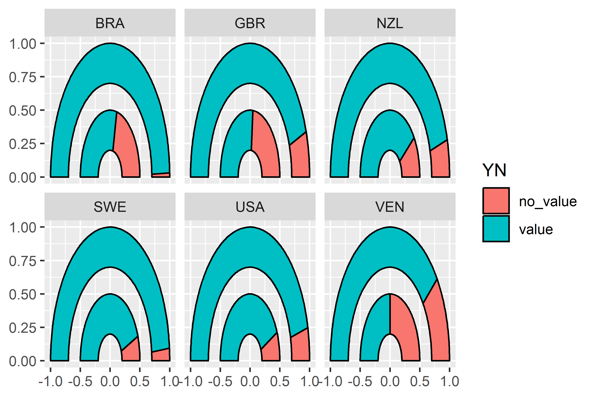
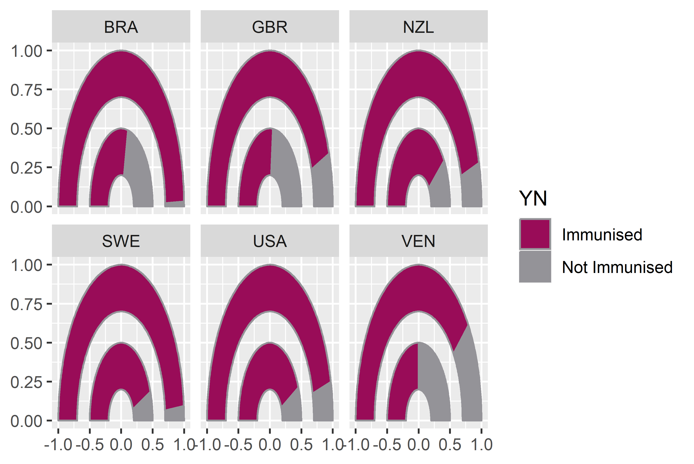
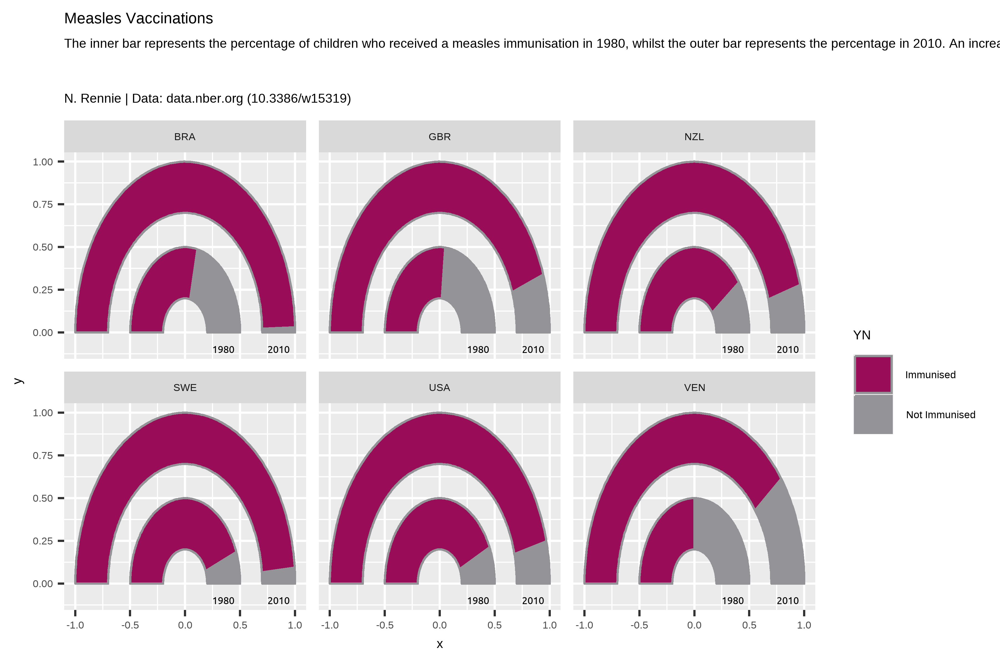
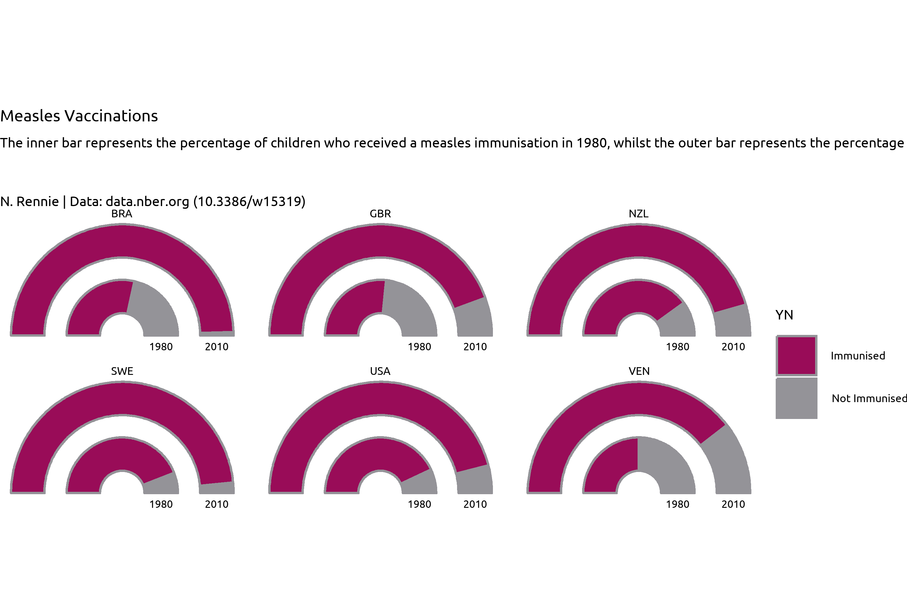
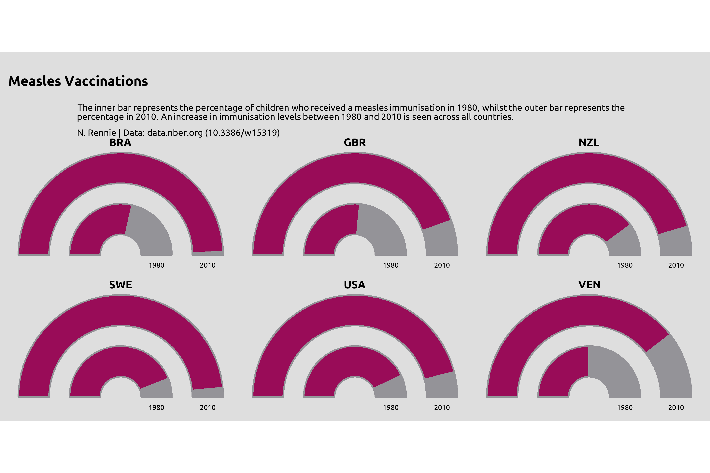
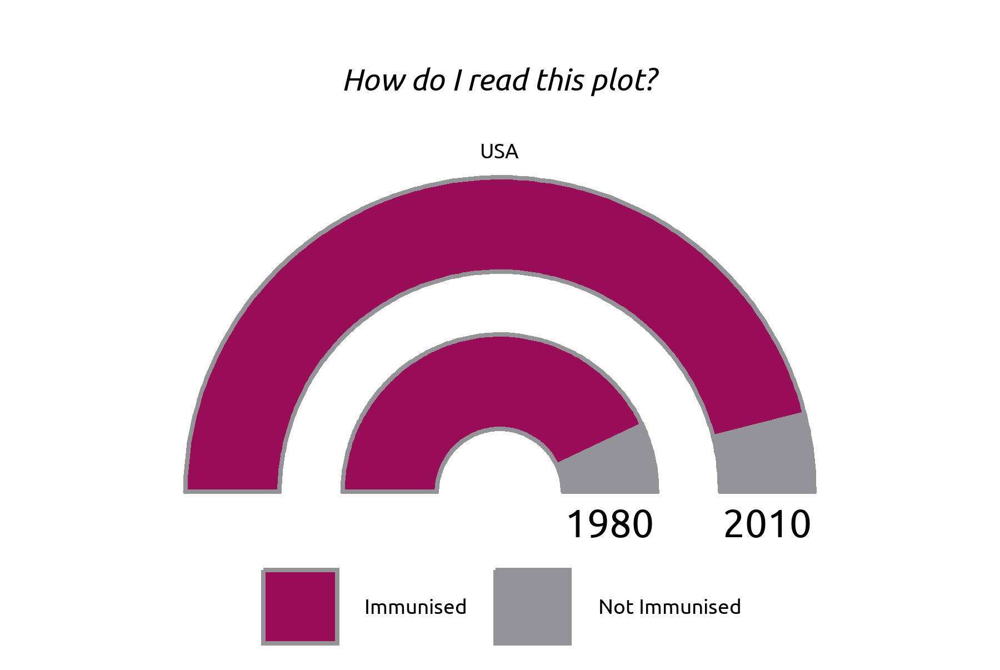
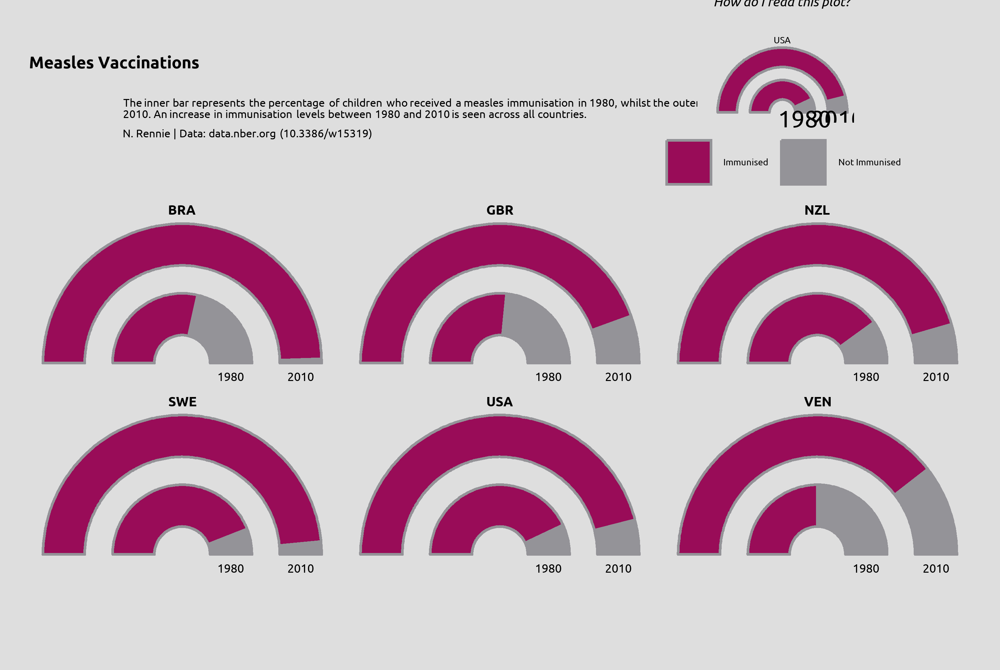

#tuesdata <- tidytuesdayR::tt_load("2022-07-19")
#technology <- tuesdata$technology
technology <- readr::read_csv("data/technology.csv")4 Technology adoption: making gauge charts with {ggforce}
In this chapter we’ll discover how to create gauge charts, a type of chart not native to {ggplot2}, with the help of the {ggforce} extension package.
4.1 Data
The technology adoption (Comin and B. 2004) data comes from
The technology data is reasonably large with 491636 rows and 7 columns. The data is in long format, and
What might be an interesting aspect of this data to visualize?
4.2 Initial exploration
As in other chapters n this book, we’ll start with some basic exploratory plots in base R. For example, we may look at the distribution of variables in each category using the barplot function:
some initial base R exploratory plots
Let’s look at something more specific
A list of all ISO3 country codes can be obtained by running unique(technology$iso3c), and from there we can choose a subset of countries we want to look at in more detail. Let’s look at Great Britain, USA, Sweden, Brazil, New Zealand, and Venezuela, and store these choices in a vector called countries. We also need to narrow down the data we want to consider - there are 194 different questions contained in the data. You can check by running length(unique(technology$label)). One variable we will consider further is the percentage of children who received a measles immunization - indicated by the "pctimmunizmeas" level in the variable column.
Although including all years of data would better allow us to consider trends in the values, sometimes looking at a only a few snapshots can be more effective. For example, by considering only the years 1980 and 2010 as we’ll do here, readers get a Wow, look how much things have changed! message rather than the perhaps less impactful visual of a gradual trend. We can use the filter function from {dplyr} to filter our technology data set to consider only the rows showing data about percentage of children who received a measles immunization, in the years 1980 or 2010, and relating to countries in our specified vector of countries.
We no longer need the group, category, variable, or label columns, as these are constant for our data so we can remove these columns using select() from {dplyr}.
# subset of countries to look at further
countries <- c("GBR", "USA", "SWE", "BRA", "NZL", "VEN")
# subset data for specific topic, years, and countries
measles_data <- technology |>
dplyr::filter(
label == "% children who received a measles immunization",
year %in% c(1980, 2010),
iso3c %in% countries
) |>
dplyr::select(-c(group, category, variable, label))
head(measles_data)# A tibble: 6 × 3
iso3c year value
<chr> <dbl> <dbl>
1 BRA 1980 57
2 BRA 2010 99
3 GBR 1980 53
4 GBR 2010 89
5 NZL 1980 80
6 NZL 2010 91Our tidier data now shows just the percentage (value) of children who received a measles immunization in each country (iso3c), in each of 1980 and 2010 (year), How might we visualize this data?
There are a couple of obvious options that come to mind: a simple grouped bar chart, a slope chart, or indeed the (not often popular) pie chart Our choice of data visualization will depend on which aspects of the data we want to show. Do we want to compare 1980 to 2010? Do we want to compare countries to each other? Do we just want to show the range of values in the data? In this data, the most interesting example is a comparison between 1980 and 2010. Although a slope chart would likely work well for this data, we’re going a little bit more experimental with a gauge chart.
At the time of writing, there isn’t a built-in function in {ggplot2} to create gauge charts. If you’ve never heard of a gauge chart, this initial sketch might give you an idea of what we’re aiming for.
photos of sketches
Before …
4.3 Data wrangling
plot_data <- measles_data |>
dplyr::mutate(no_value = 100 - value) |>
tidyr::pivot_longer(
cols = c(value, no_value),
names_to = "YN",
values_to = "perc"
) |>
tidyr::pivot_wider(names_from = "year", values_from = "perc") |>
dplyr::mutate(YN = factor(YN)) |>
dplyr::mutate(
perc_1980 = `1980` / 100,
perc_2010 = `2010` / 100
) |>
dplyr::select(-c(`1980`, `2010`)) |>
dplyr::group_by(iso3c) |>
dplyr::mutate(
ymax_1980 = cumsum(perc_1980),
ymax_2010 = cumsum(perc_2010)
)
head(plot_data)# A tibble: 6 × 6
# Groups: iso3c [3]
iso3c YN perc_1980 perc_2010 ymax_1980 ymax_2010
<chr> <fct> <dbl> <dbl> <dbl> <dbl>
1 BRA value 0.57 0.99 0.57 0.99
2 BRA no_value 0.43 0.01 1 1
3 GBR value 0.53 0.89 0.53 0.89
4 GBR no_value 0.47 0.11 1 1
5 NZL value 0.8 0.91 0.8 0.91
6 NZL no_value 0.2 0.09 1 1 4.4 The {ggforce} extension package
The {ggforce} extension package (Pedersen 2022) contains many useful functions which extend the behavior of {ggplot2}, many of them aimed at exploratory data visualisation. We won’t cover many of it’s function in this chapter, and instead we’ll focus on how to use it to create gauge charts.
{ggforce} is available on CRAN and can be installed with the usual install.packages("ggforce") command.
4.4.1 Gauge charts with {ggforce}
geom_arc_bar()
4.4.2 Reformatting data
gauge data
this changed from original mutate_at
gauge_data <- plot_data |>
dplyr::ungroup() |>
dplyr::mutate(
ymin_1980 = c(rbind(
rep(0, length(countries)),
(dplyr::slice_head(plot_data, n = -1) |>
dplyr::pull(ymax_1980))
))
) |>
dplyr::mutate(
ymin_2010 = c(rbind(
rep(0, length(countries)),
(dplyr::slice_head(plot_data, n = -1) |>
dplyr::pull(ymax_2010))
))
) |>
dplyr::group_by(iso3c) |>
dplyr::mutate(
dplyr::across(
dplyr::starts_with("y", ignore.case = FALSE),
~ scales::rescale(.,
to = pi * c(-0.5, 0.5),
from = 0:1
)
)
)4.5 Initial plots
basic plot
library(ggplot2)
basic_plot <- ggplot(data = gauge_data) +
ggforce::geom_arc_bar(
mapping = aes(
x0 = 0, y0 = 0,
r0 = 0.7, r = 1,
start = ymin_2010, end = ymax_2010,
fill = YN
)
) +
ggforce::geom_arc_bar(
mapping = aes(
x0 = 0, y0 = 0,
r0 = 0.2, r = 0.5,
start = ymin_1980, end = ymax_1980,
fill = YN
)
) +
facet_wrap(~iso3c, nrow = 2)
basic_plot

geom_arc_bar() from {ggforce}, facetted by different countries.
4.6 Colors
highlight_col <- "#990c58"
second_col <- "#949398"
bg_col <- "#dedede"add new colors to basic plot
basic_plot <- ggplot(data = gauge_data) +
ggforce::geom_arc_bar(
mapping = aes(
x0 = 0, y0 = 0,
r0 = 0.7, r = 1,
start = ymin_2010, end = ymax_2010,
fill = YN
),
color = second_col
) +
ggforce::geom_arc_bar(
mapping = aes(
x0 = 0, y0 = 0,
r0 = 0.2, r = 0.5,
start = ymin_1980, end = ymax_1980,
fill = YN
),
color = second_col
) +
facet_wrap(~iso3c, nrow = 2)add scale fill
color_plot <- basic_plot +
scale_fill_manual(
breaks = c("value", "no_value"),
labels = c("Immunised", "Not Immunised"),
values = c(highlight_col, second_col)
)
color_plot

4.7 Text and fonts
As we’ve seen in previous chapters, we can load in Google fonts using the {sysfonts} and {showtext} packages. Here, we’ll keep it clean and minimal by using the "Ubuntu" font for both the title and the body font.
sysfonts::font_add_google(name = "Ubuntu", family = "ubuntu")
showtext::showtext_auto()
showtext::showtext_opts(dpi = 300)
body_font <- "ubuntu"write text social to add
title <- "Measles Vaccinations"
subtitle <- "The inner bar represents the percentage of children who received a measles immunisation in 1980, whilst the outer bar represents the percentage in 2010. An increase in immunisation levels between 1980 and 2010 is seen across all countries.\n\nN. Rennie | Data: data.nber.org (10.3386/w15319)"Since axis labels tend not to make too much sense for geom-arc_bar() plots, we’ll remove them later when using the theme functions. Instead, we can add our own labels using geom_text() to the end of the gauges. To make it easier, we can construct a small data.frame specifically for adding text labels. This includes the x, and y coordinates where the text should be positioned (you can read these of from the graph we already have since we haven’t yet deleted the axis label), as well as the label that should appear.
text_df <- data.frame(
x = c(0.35, 0.85),
y = c(-0.1, -0.1),
label = c(1980, 2010)
)We can then add this to the existing plot by adding a layer with geom_text(), noting that we need to specify the data argument as using the text dataframe we just created. We also need to specify the font family and size directly within the geom_text() function, and can add the title and subtitle text created earlier using the labs() function from {ggplot2}.
text_plot <- color_plot +
geom_text(
data = text_df,
mapping = aes(x = x, y = y, label = label),
family = body_font,
size = 3
) +
labs(
title = title,
subtitle = subtitle
)
text_plot

You’ll notice that the subtitle text runs off the page here. Let’s fix that using {ggplot2} themes and {ggtext} functions.
4.8 Themes and styling
We’ll start by removing all of the theme element such as the grey background, grid lines, axis labels. The easiest way to do this is using theme_void(). We can use the base_family argument of theme_void() to set the font family that will be used by default for any non-geom text elements that remain.
You may have noticed that the current gauge plots look a bit squashed and not exactly semi-circular. We can fix this by adding coord_fixed() which forces a 1:1 aspect ratio on the plot panel.
theme_plot1 <- text_plot +
coord_fixed() +
theme_void(base_family = body_font)
theme_plot1

This looks better but it’s still not great. What do we still need to improve with styling? The title text doesn’t stand out and blends in to easily with the subtitle, similarly for the facet text. Perhaps a bold font would help? The subtitle text doesn’t fit onto the page but we can fix that with the help of the hopefully now familiar element_textbox_simple() function from {ggtext} .
bg col remove legend
Let’s fix the first three of these issues.
main_plot <- theme_plot1 +
theme(
legend.position = "none",
plot.background = element_rect(
fill = bg_col, color = bg_col
),
panel.background = element_rect(
fill = bg_col, color = bg_col
),
strip.text = element_text(
face = "bold", size = rel(1.2)
),
plot.title = element_text(
margin = margin(t = 10, b = 10),
face = "bold",
size = rel(1.5)
),
plot.subtitle = ggtext::element_textbox_simple(
maxwidth = 0.8,
lineheight = 0.5,
hjust = 0.5,
),
plot.margin = margin(5, 5, 5, 5)
)
main_plot

4.9 Adding a better legend
As we already saw in chapter …,
legend_plot <- ggplot(
data = dplyr::filter(gauge_data, iso3c == "USA")
) +
ggforce::geom_arc_bar(
mapping = aes(
x0 = 0, y0 = 0,
r0 = 0.7, r = 1,
start = ymin_2010, end = ymax_2010,
fill = YN
),
color = second_col
) +
ggforce::geom_arc_bar(
mapping = aes(
x0 = 0, y0 = 0,
r0 = 0.2, r = 0.5,
start = ymin_1980, end = ymax_1980,
fill = YN
),
color = second_col
) +
geom_text(
data = text_df,
mapping = aes(x = x, y = y, label = label),
family = body_font, size = 6
) +
facet_wrap(~iso3c) +
scale_fill_manual(
breaks = c("value", "no_value"),
labels = c("Immunised", "Not Immunised"),
values = c(highlight_col, second_col)
) +
labs(title = "How do I read this plot?") +
coord_fixed() +
theme_void(base_family = body_font) +
theme(
legend.position = "bottom",
legend.title = element_blank(),
plot.background = element_rect(
fill = "transparent", color = "transparent"
),
panel.background = element_rect(
fill = "transparent", color = "transparent"
),
plot.title = element_text(
hjust = 0.5,
face = "italic",
margin = margin(t = 10, b = 10)
),
plot.margin = margin(5, 5, 5, 5)
)
legend_plot

4.10 Combining legend with {patchwork}
Join with {patchwork}
library(patchwork)
final_plot <- main_plot +
inset_element(legend_plot, 0.5, 0.9, 1.1, 1.4) &
theme(
plot.background = element_rect(
fill = bg_col, color = bg_col
),
panel.background = element_rect(
fill = bg_col, color = bg_col
)
)
final_plot

As with previous examples, don’t be fooled into thinking that the size of the legend and it’s positioning within the main plot is something that happened perfectly this first. The values are often picked through a series of trial and error, and with practice you’ll get better at choosing starting values.
4.11 Reflection
Are gauge charts the most effective method of visualising this data? No. Gauge charts have their own problems, some of which you can see here. Since the ring representing 2010 is on the outside, the radius is larger, and therefore the area . If you measure the change on arc length between 1980 and 2010, you’ll get different answers to if you measured the proportional change in area for the two.